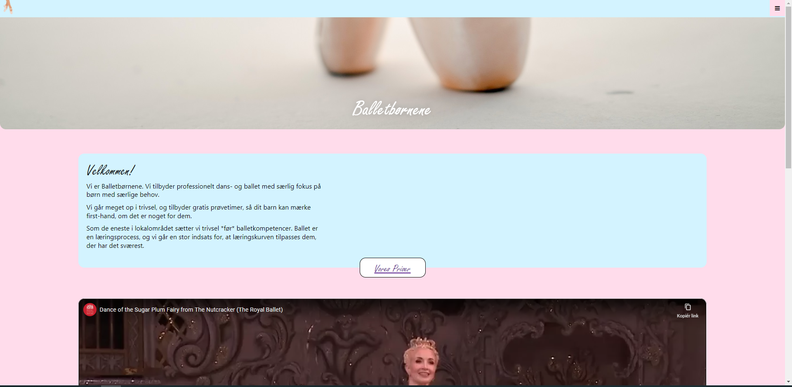
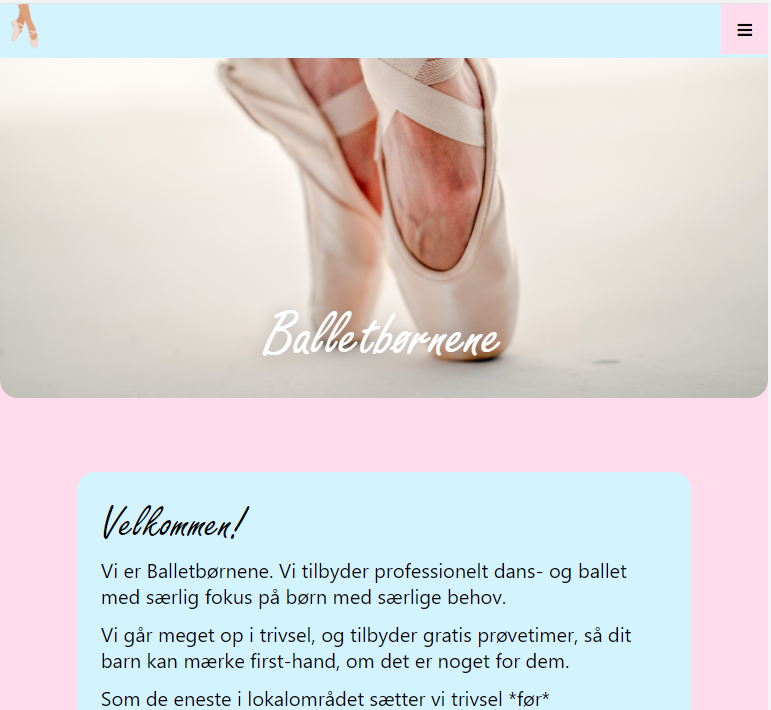
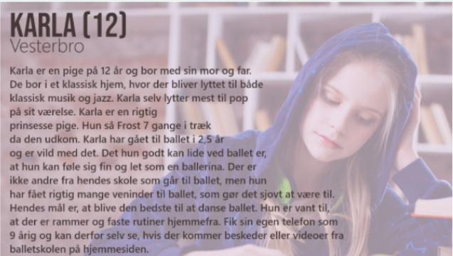
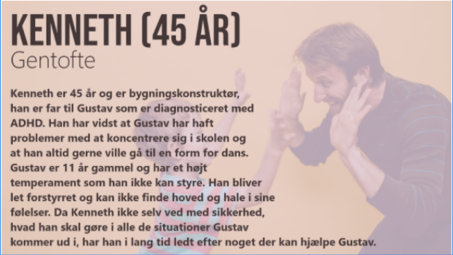
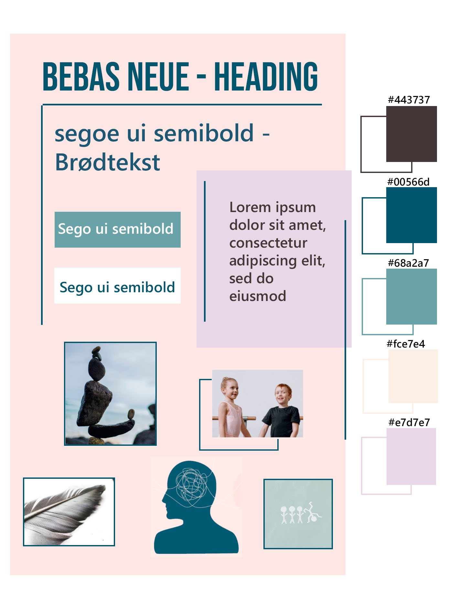
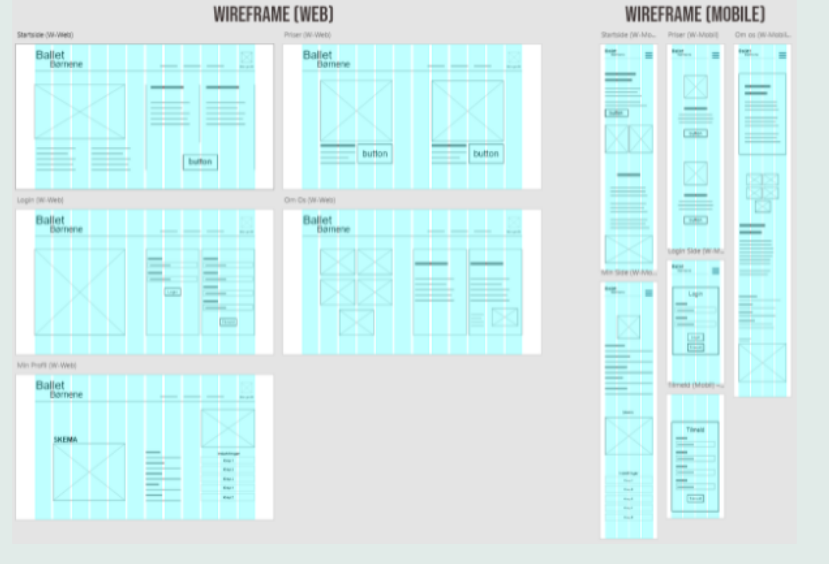

Dette projekt blev lavet for en Balletskole - Balletbørnene. De kunne godt tænke sig, at ramme specielt børn med ADHD, da det er blevet påvist, at ballet har en god indvirkning på børn med ADHD. Min rolle i dette projekt var design og brugertest. I dette projekt brugte vi metoderne:
Vi brugte værktøjerne:
Vi lavede derfor et redesign af deres hjemmeside som du kan se her:
 Vi startede vores process med kigge på balletskolens målgruppe og ud fra dem lave to personaer:
 Ud fra dem, kunne vi fastslå målgruppens emotionelle drivere
Henimod: Kontrol, Ro, Balance, koncentration, fællesskab, kultureliten/prestige.
Væk fra: Uro i krop og hoved, at alting skal være så mentalt hårdt.
Fejl: Der er sikkert alligevel ikke plads på holdet. Underviserne er sure og skælder mig ud. De vil ikke kunne håndtere mit barn.
Tvivl: De andre er sikkert bedre end mig. Jeg vil blive drillet hvis jeg går til ballet. Er det noget for mig? Børn starter allerede som 2 årige med at danse ballet, jeg kan ikke komme som 12 årig og starte uden nogen form for erfaring.
Myter: Det er kun piger der danser ballet. Ballet er kun for rige familier. Det er et meget indspist miljø. Ballet er ikke sjovt, det er nærmere militær disciplin. Det er kun piger med spiseforstyrrelser der danser ballet. Det er
meget konkurrence- præget. Der er sikkert en optagelsesprøve for at kunne få lov til at starte til ballet.
Vi var dermed klar til at lave et moodboad. Moodboardet skulle afspejle alt det som målgruppen gerne vil hen imod. Det gjorde vi ved at tilføje en professionel san-serif skrifttype. Både Bebas Neue og Sego ui semibold er meget let læselig. Vi har valgt at lade os inspirere af farverne fra den oprindelige hjemmeside. Vi kunne godt lide, at der var noget der både appellerede til piger og til drenge. Vi har ændret på dem, så de ikke er helt lige så babypink og babyblå som før.
Vi havde efterfølgende omkring 25 personer til at kigge på vores moodboard. Generelt var indtrykket godt. Vi fik positiv respons på vores farver. For nogle var det tydeligt, at vi arbejdede med det mentale helbred.
De følelser/ord vi noterede fra feedbacken var: “Rolig. Intelligens. Fred. Alvorlig. Frihed. Feminin. Zen. Pastel. Aktiviteter for børn. Indre konflikt. Børn. Baby farver.”
Da vi stod overfor et totalt redesign af hjemmesiden, begyndte vi herfra med først at udforme wireframe:
Efter at vi havde lavet wireframe af siderne og var tilfredse med layoutet, så gik vi igang med at lave prototypen i Xd. Vi lagde vores moodboard ind i Xd som inspiration og gik igang med at få designet siderne med farver, fonts, knapper og
links.
Tryk på billederne for at se prototypen til hhv. web og mobil før brugertest:
For at optimere vores Xd, foretog vi nogle brugertest. Alle vores brugertest blev lavet med grupper af ca. 5-6 personer. Vi gav dem først mulighed for at undersøge siden selv og klikke lidt rundt, så de kunne danne sig et overblik. Herefter fik
de forskellige opgaver de skulle løse.
Brugerscenarier
Du vil gerne tilmelde dig vores sommerstart pakke. Du har nu lavet en bruger på vores side og vil gerne se hvilket dansehold, som dit barn er kommet på. Find ud af hvem vi er, og hvad vores mission er på skolen. Du vil nu gerne tjekke
dit barns skema for denne uge, for at se hvornår deres dansetimer lægger. Du vil nu gerne kontakte os, da dit barn ikke gider at danse mere og vil meldes ud.
Feedback
“Meget ren og enkelt. Professionel. Roligt design. Fede farver! God skrifttype. Nem at finde navigere i. Fed grafik. Konsekvent.”
Den visuelle feedback var meget positiv. Generelt var folk glade for farverne, og måden de spillede sammen på. Også det at der var lavet skygger på alle vores linier gav et godt udtryk. Fonten blev også nævnt positivt, de kunne godt lide,
at overskrifterne var store og generelt var holdningen at siden hang rigtig godt sammen. Mange nævnte, at de synes at det var et meget rent design.
Fra vores brugertest fik vi også en del feedback som vi kan arbejde videre på:
Ud fra den feedback vi fik ved bruger scenarierne, kunne vi så gå til experimentation fasen igen og begynde at implementere disse rettelser og features i prototypen.
Nedenfor kan du se prototypen til hhv. web og mobil Efter brugertest:
Som man kan se, tilføjede vi nogle nye sider i form af overlays på baggrund af den feedback vi fik. Vi tilføjede knapper på de markerede dage inde på skemaet under “Min Side”. Disse knapper linker videre til et overlay hvor man kan få mere information
om den dansetime, som man har i løbet af ugen. (Hvad tid, hvilke lokale og hvilken lærer)
Derefter lavede vi billederne inde på “Om os” til knapper som linker til en info side omkring hver lærer, som man ser på billedet, samt en introduktionsvideo, så forældrene/barnet kan få et førstehåndsindtryk af læreren før de møder ham/hende.
Til sidst tilføjede vi en knap på logoet i venstre hjørne foroven, som linker tilbage til forsiden.
Ud over de erfaringer vi har gjort os ved vores brugertest, har vi forsøgt at lave en plan for, hvordan man ellers ville kunne udbygge hjemmesiden. Siderne har vi udvalgt efter en brainstorm:
Når vi har udbygget hjemmesiden med disse sider. Vil der også være grobund for at lave kortsortering testen, for at få et overblik over, om vores sitemap er lavet på den mest intuitive måde.